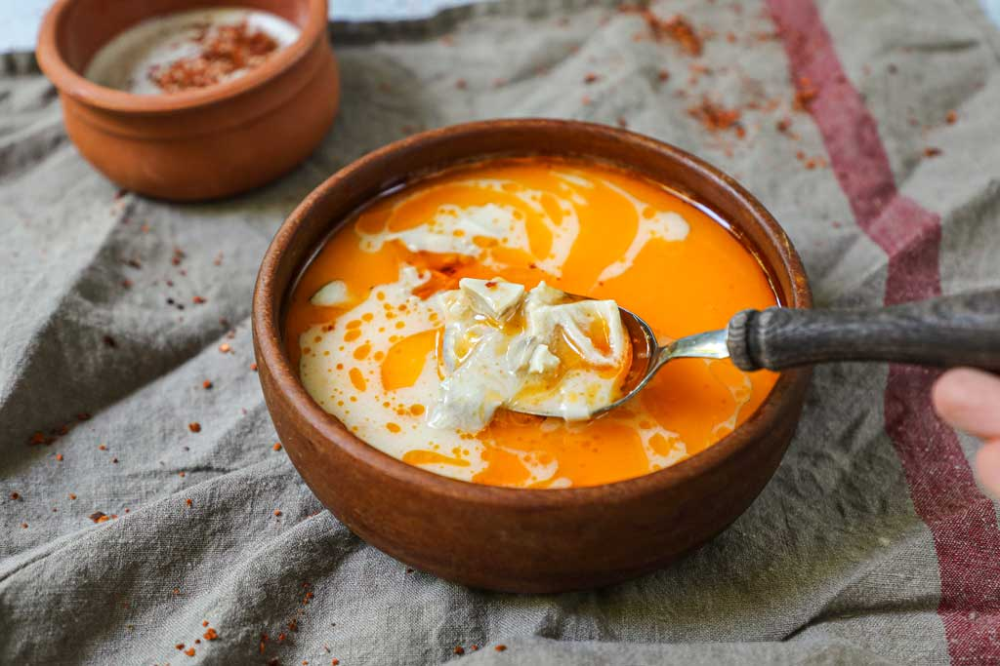

Shkembe Chorba

Description
Tripe soup or tripe stew is a soup or stew made with tripe (cow or lamb/mutton stomach). It is widely (not
universally) considered to be a hangover remedy.
Ingredients
- 1 lb (450 grams) tripe
- 1.5 Cup Sunflower Oil
- 3 Cups fresh milk
- 2 Tablespoon salt
- 3 Teaspoon Paprika
- 2 Tablespoon Black Pepper
- 2 Tablespoon spicy pepper (or chilli) powder
- 3 Garlic cloves, diced into tiny pieces
- 1/2 Cup Wine Vinegar (red)
Steps
- Clean the tripe
- Boil the tripe for 4-5 minutes and clean it from both sites until all marks and fat layers are completely
gone
- Rinse the tripe and keep it in cold water
- Simmer for 4-5 hours and keep periodically adding water to make sure the trip is submerged
- Take the cooked tripe out and cut it into chunks or mince it, depending on your preference
- Add the tripe back in the same water (this is very important)
- Add some oil, milk, salt, black pepper, spicy pepper powder, and diced garlic
- Leave it on low flame for another 20 minutes
- Before you serve, add some red wine vinegar into the soup
- Serve it with some fresh bread and enjoy